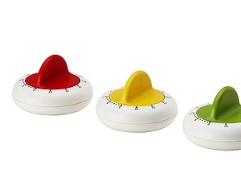
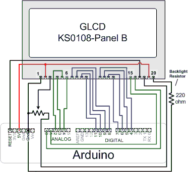
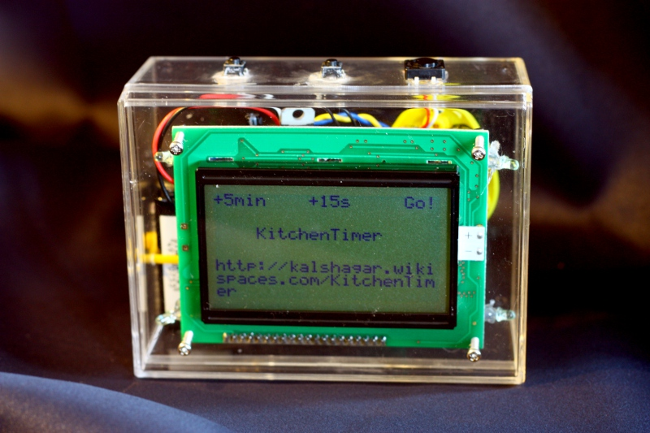
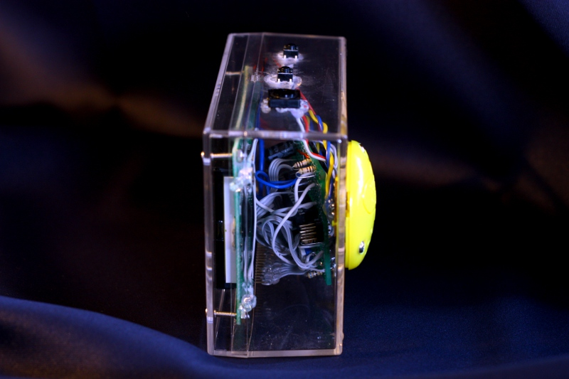
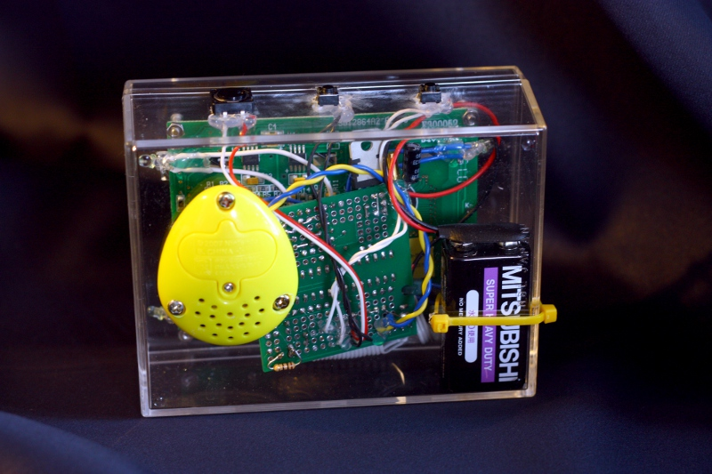

Goal
Goal is to replace this Ikea super cheap timer that works ... well, as good as something manual that you paied less than 200 JPY (less than 2 euro). Not precise, sometimes doesn't ring, or ring just the blink of an eye, so easy to miss...
The new timer will:
- Have a graphical LCD (bought one one year ago, never used it, needed a pretext, so...)
- Work on battery (1x 9v battery)
- Play music when it's time
- Use a speaker and amp
- Possibly use a YMZ294 ?
- In fact something else but much better...
- Have an on/off system with a push-button, not a open/close switch In fact a tilt switch
- No arduino, but a simple atmega 328 (more than sufficient)
- Keep me busy a few days while allowing me to use some parts I bought long time ago and create a un-reasonable and out of price kitchen timer
Hall of fame:
- Electronics-lab : http://www.electronics-lab.com/blog/?p=16570
- Hackaday : http://hackaday.com/2012/02/03/kitchen-timer-makes-mario-your-sous-chef/
Features
Plateform and board
Following the saying of "eat your own cuisine", I'll use my Rapide328 board since it's sufficient for what we want to do here (throwing in a 16Mhz crystal, it's an arduino clone minus USB). I'll be using the Arduino libs, meaning compile with Arduino IDE and then upload the produced .hex to the board via a programmer. Therefore the code is 100% compliant with an Arduino and you could reuse it with the Arduino effort with 0 development.Great (temporary) deception however: the Rapide328 works very fine but once the graphic LCD plugged on, since it uses the MOSI wire, I can't upload via the ISP anymore!! I have to move the uC between an Arduino and the board to test ... Solution : change the default wiring and reposition wires where it's more convenient! Just change the ks0108_Arduino.h file and move that wire to some other pin!
Auto on-off
Two ways were possible, I picked the easy :- The hard way (easy) : use a tilt switch. Turn upside-down and the it's off!
- For the record I soldered a 47 uF cap in parallel of the tilt switch. It seems to remove most of the flicker, but thinking again it doesn't seem such a great idea since even no current should flow, a little is still always leaking and killing the battery. Am I wrong ? I guess so, so please explain me where.
- The soft way (hard) : make a push-on/push-off system driven by the micro controller. Click a momentary switch it turns on, and the uC can turn the whole stuff down by itself.
Links
- On-Off with 3 transistors http://talkingelectronics.com/projects/200TrCcts/200TrCcts.html#16
- Thanks to my DIY-hero Dino SEGOVIS for sharing this finding in this video
- Another very simple on-off but using a relay... http://www.oldradio.com/current/pushon-pushoff.htm
- http://www.seanet.com/~karllunt/atmegapowerdown.html
- http://www.josepino.com/howto/on_off_button
- http://www.pololu.com/catalog/product/750
- http://electronics.stackexchange.com/questions/9015/how-to-implement-a-soft-power-switch-controllable-by-microcontroller
- ... or just stop being stuborn and use the sleep mode http://jarv.org/2011/12/musical-ms-pacman-candy-tin-hack/
Graphical LCD
Use that big graphic LCD bought the other day and sitting alone and forgotten.Use that library that works just fine (great job and many thanks to the author) http://www.arduino.cc/playground/Code/GLCDks0108
My concern is now that I have 7 pins left ... quite short. Rewriting part of the above library to use a SIPO is not something I dream of neither so I'll go with that constraint since I can live with it.
For the record, I just amended a bit the suggested wiring : my C1/C2 pin are inverted (my mistake I think, I never had the will to check, just inverted the pins in the .h file) and I moved the pin that was going to the Atmega MOSI pin somewhere else (I'm using ISP programmer, it didn't work with that pin used by the GLCD).
Light every minute tick, shows remaining time.
Sound
What I wanted to do
Use a YMZ294 'cause I have some of them left. Will require a SIPO chip since I won't have enough I/O pins available with the LCD and the YMZ294 and the on-off and the bling bling ...Music would be nintendo classics or classical music ? Did that in the past, should be able to make it work again.
Speaker must be small, so maybe reuse that cell-phone scavenged speaker? Or that flat profile speaker bought the other day?
What I will do

I don't have many pins left, so instead of sound and poor led I'll with poor sound (buzzer/uC Driver speaker ?) and led. But in fact I found in the pile of stuffs I have one of those key chains playing supermario sounds that you buy in distributor machine for 200 JPY. This one was of no great value to me but was quite loud : I opened it, soldered 2 wires on the button pad, added an optocoupler between that and the arduino, et voila !
- By the way, the one I used http://www.youtube.com/watch?v=YjLJpyGqyT8
- A bit more details http://www.mariowiki.com/Keychains#Sound%20Drops
- Just found a tutorial of a guy explaining how to do it (saves me the need to write it for you) http://www.instructables.com/id/Super-Mario-Bros-Warp-Pipe-Sound-Effect-Toilet-To/
Input
Well you have to say how long you want it to wait, haven't you? I imagine now the following inputs:- Momentary switch 1 : %205 minutes
- Momentary switch 2 : %2015 sec
- Momentary switch 3 : Start/Pause (start could be replaced by a "start automatically as soon as first duration is entered")
I used the All buttons on one pin technique that I've not yet used. Looks good since I still have one Analog pin left and I don't see other usage for that pin.
- Use the method explained at Arduino and a button
Bling bling
In addition to sound, added 2 transistor driving each one 2 leds to blink with the music.Power
Must : have sufficient power (duh!), match the usage (used not often but when used it's continuously for 30 avg?), keep small volume and keep it light. My choice is a square 9v battery (smaller) and a LM7805. Maybe not the best choice, but it works. Other option could have been those cheap 5v USB charger that work with 2 AA battery : costs 100 jpy, but is it better?- Went for the 9v battery 7805 regulation
Code
The source
As usual, everything is on Google code : http://code.google.com/p/alanarduinotools/source/browse/#svn%2Ftrunk%2FKitchenTimerSet the fuses
We're using a atmega328 in same config as an arduino, sot set the fuses to use the 16 MHz crystal.For the record: the glcd worked also with the internal 8MHz oscillator (with default division of 8) meaning 1 MHz although compiled for a 16MHz pace. It was just slower. 16x times slower. But worked.
avrdude -v -v -p m328p -c avrispv2 -P COM1 -U lfuse:w:0xf7:m -U hfuse:w:0xd9:m -U efuse:w:0xff:m
Upload the binary
I use the pololu programmer so I type something like this :avrdude -c avrispv2 -p m328p -P COM1 -U flash:w:C:\Users\Alan\AppData\Local\Temp\build66073673223083421.tmp\KitchenTimer.cpp.hex:i
Point of interrest
- Using the GLCD library, a really nice job easy to configure. Thanks to the author.
- 3 buttons on a pin : works really fine and a pin saver.
- The """hack""" (hum hum) of the Super Mario key chain that is backpacked on the box
- Making a replacement timer that is maybe 20 times the price of the original one
- Finally make a something that make my wife react more than a raised eyebrow and a pat on the back. She really uses and like it.

Pictures
|  On startup : turn it upside-up (!) and the current flows. Input duration with the 2 top left and middle button and Go! |
While counting time ... |
|  Side picture (yeah it's quite big) |
 Back picture : notice the yellow keychain that is screwed on the back of the box. |